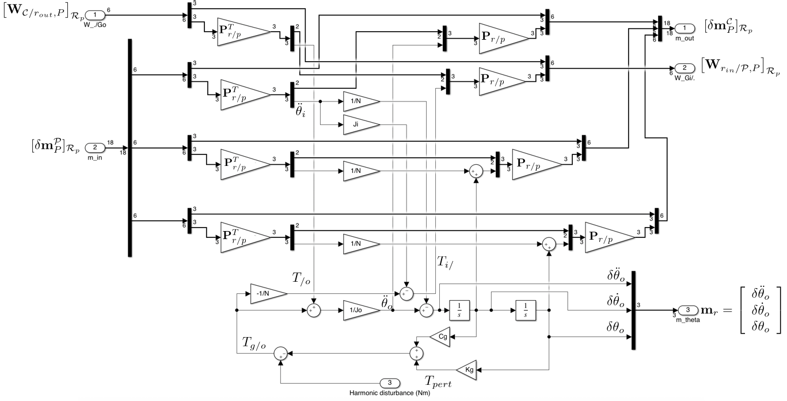
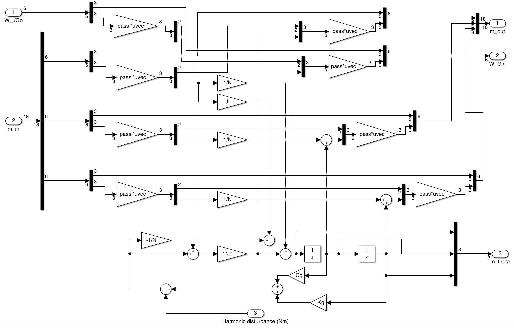

Gear box.
Linear augmented TITOP model of a gear box $27 \times 25$.
This block implements the augmented $27 \times 25$ TITOP (Two-Input Two-Output Ports) linear model of a gearbox located at the interconnection $P$ between a parent body $\mathcal P$ and a child body $\mathcal C$. The inputs and the outputs of this model are:
- the $18 \times 6 $ transfer from the wrench applied by the child body $\mathcal C$ at the point $P$ on the gearbox output shaf to the motion vector of the body $\mathcal C$ at the point $P$, projected in the parent body frame $\mathcal R_p$,
- the $6 \times 18 $ transfer from the motion vector imposed by the parent body $\mathcal P$ at the connection point $P$ to the wrench applied by the gearbox input shaft to the parent body $\mathcal P$ at the point $P$, projected in the parent body frame $\mathcal R_p$,
- the $3 \times 1 $ transfer from the disturbing torque applied inside the gearbox to output shaft by the input shaft to the relative motion vector $\mathbf m_r=\left[\delta\ddot\theta_o,\;\;\delta\dot\theta_o,\;\;\delta\theta_o\right]^T$ where $\delta\theta_o$ is the gearbox internal deflection seen from the output shaft
Remarks:
- This block is in fact derived from the Revolute joint block and includes the internal gearbox stiffness and damping and tekes also into account the gear ratio between the input shaft and the output shafy.
See also: General notations, Revolute joint, Revolute joint + configuration, Stepper motor, Prismatic joint, 1-port flexible body, Multi port rigid body
Contents
Description
Considering a 2 gearbox at the point $P$ between the pare,t body $\mathcal{P}$ (body bearing the stator, denoted $r_{in}$) and the child body $\mathcal{C}$ (linked to the rotor, denoted $r_{out}$) characterized by:
- $\mathcal{R}_p$: the local (inherit) frame,
- $\mathbf{r}_a$: the direction of the gear box axis and $\mathbf{\tilde{r}}_a$ a unitary vector along this direction,
- $N_g$: the gearbox ratio,
- $K_g$ and $C_g$: the gearbox stiffness and damping seen from the output shaft, respectively,
- $J_o$: inertia of the output shaft,
- $J_i$: inertia of the input shaft.
Let us define:
- $\mathbf{W}_{\mathcal C/r_{out},P}=\left[\mathbf{F}^T_{\mathcal C/r_{out}} \;\;\mathbf{T}^T_{\mathcal C/r_{out},P}\right]^T$: the external wrench ($6\times 1$) applied by the child body $\mathcal C$ on the output shaft, at point $P$,
- $\delta\mathbf{m}^{\mathcal C}_{P}$ the motion vector ($18\times 1$) of the child body $\mathcal C$ at the point $P$. $\delta\mathbf m^\mathcal{C}_P=\left[{\boldsymbol{\mathbf{x}''}^\mathcal{C}_P}^T\;\;{\delta\boldsymbol{\mathbf x'}^\mathcal{C}_P}^T\;\;{\delta\mathbf{x}^\mathcal{C}_P}^T\right]^T$ with $\boldsymbol{\mathbf{x}''}^\mathcal{C}_P= \left[ {\mathbf{a}^{\mathcal C}_P}^T \;\; {\boldsymbol{\dot\omega}^{\mathcal C}}^T \right]^T$ ($\delta\mathbf{m}^{\mathcal C}_{P}=\delta\mathbf m_{out}$: the motion vector of the output shaft),
- $\delta\mathbf{m}^{\mathcal P}_{P}$ the motion vector ($18\times 1$) of the parent body $\mathcal P$ at the point $P$. $\delta\mathbf m^\mathcal{P}_P=\left[{\boldsymbol{\mathbf{x}''}^\mathcal{P}_P}^T\;\;{\delta\boldsymbol{\mathbf x'}^\mathcal{P}_P}^T\;\;{\delta\mathbf{x}^\mathcal{P}_P}^T\right]^T$ with $\boldsymbol{\mathbf{x}''}^\mathcal{P}_P= \left[ {\mathbf{a}^{\mathcal P}_P}^T \;\; {\boldsymbol{\dot\omega}^{\mathcal P}}^T \right]^T$ ($\delta\mathbf{m}^{\mathcal P}_{P}=\delta\mathbf m_{in}$: the motion vector of the input shaft),
- $\mathbf{W}_{r_{in}/\mathcal P,P}=\left[\mathbf{F}^T_{r_{in}/\mathcal P} \;\;\mathbf{T}^T_{r_{in}/\mathcal P,P}\right]^T$: the wrench ($6\times 1$) applied by input shaft on the parent body $\mathcal P$, at point $P$,
- $T_{/o}=[\mathbf{\tilde{r}}_a]^T_{\mathcal{R}_p}\,[\mathbf{T}_{\mathcal{C}/r_{out},P}]_{\mathcal{R}_p}$ the torque applied by the body $\mathcal{A}$ on the output shaft of the gearbox at the connection point $P$ around $\mathbf{\tilde{r}}_a$,
- $T_{i/}=[\mathbf{\tilde{r}}_a]^T_{\mathcal{R}_p}\,[\mathbf{T}_{r_{in}/\mathcal P,P}]_{\mathcal{R}_p}$ the torque applied by the input shaft of the gearbox to the body $r$ at the connection point $P$ around $\mathbf{\tilde{r}}_a$,
- $\ddot{\theta}_o=[\mathbf{\tilde{r}}_a]^T_{\mathcal{R}_p}[\dot{\boldsymbol{\omega}}^{\mathcal C}]_{\mathcal{R}_p}$ the angular acceleration of the output shaft around $\mathbf{\tilde{r}}_a$,
- $\ddot{\theta}_i=[\mathbf{\tilde{r}}_a]^T_{\mathcal{R}_p}[\dot{\boldsymbol{\omega}}^{\mathcal P}]_{\mathcal{R}_p}$ the angular acceleration of the input shaft around $\mathbf{\tilde{r}}_a$.
Then, the angular deflection of the gearbox due to its stiffness, seen from the output shaft reads: $$\delta\theta_o=\theta_o-\frac{\theta_i}{N_g}$$ and the internal reaction torque on the output shaft can be described by: $$T_{g/o}=-K_g\delta\theta_o-C_g\dot{\delta\theta_o}+T_{pert}$$ where $T_{pert}$ is an harmonic disturbance due to one or more contact damage(s) in gear pairs inside the gear box (see also docKAGMT to characterize these disturbance frequencies).
Then the dynamic model reads: $$J_o\ddot{\theta_o} = T_{/o}+T_{g/o}\;,$$ $$J_i\ddot{\theta_i} = -T_{i/}-T_{g/o}/N_g\;.$$
Considering the DCM matrix mapping the revolute joint axis on the third axis :
$$\mathbf{P}_{r/p}=\mathbf{P_r}_p\left[\begin{array}{ccc} \mbox{det}(\mathbf{P_{r}}_p) & 0 & 0\\ 0 & 1 & 0 \\ 0 & 0 & 1\end{array}\right]\;\; \mbox{with: } \mathbf{P_r}_p=\left[\mbox{null}([\mathbf{\tilde{r}}_a]^T_{\mathcal{R}_p})\quad [\mathbf{\tilde{r}}_a]_{\mathcal{R}_p}\right],$$ then, the block-diagram of the TITOP model of a 2-phase stepper motor can be depicted in the following Figure.

Ports
Inputs:
- W./Go $=\left[\mathbf{W}_{\mathcal C/r_{out},P}\right]_{\mathcal R_p}$: 6 component signal (units: $N$ and $N.m$),
- m_in $=\left[\delta\mathbf{m}^{\mathcal P}_{P}\right]_{\mathcal{R}_p}$: 18 component signal (units: $m/s^2$, $rd/s^2$, $m/s$, $rd/s$, $m$, $rd$),
- Harm_pert (Nm) $=T_{pert}$: scalar sifgnal (unit: $Nm$).
Outputs:
- m_out $=\left[\delta\mathbf{m}^{\mathcal C}_{P}\right]_{\mathcal{R}_p}$: 18 component signal (units: $m/s^2$, $rd/s^2$, $m/s$, $rd/s$, $m$, $rd$),
- WGi/. $=\left[\mathbf{W}_{r_{in}/\mathcal P,P}\right]_{\mathcal{R}_p}$: 6 component signal (units: $N$ and $N.m$),
- m_theta_o $=\mathbf m_r=\left[\delta\ddot\theta_o,\;\;\delta\dot\theta_o,\;\;\delta\theta_o\right]^T$: the relative motion vector (unit: $rd/s^2$, $rd/s$, $rd$).
Parameters
The parameters are:
- the direction of the joint-axis in the local frame (3x1 vector) expressed in the local (inherit) frame: $\left[\mathbf{r}_a\right]_{\mathcal{R}_a}$,
- the gear box ratio: $N_g$
- the output shaft inertia (unit: $Kg.m^2$): $J_o$
- the input shaft inertia (unit: $Kg.m^2$): $J_i$
- the gearbox stiffness seen from the output shaft (unit: $Nm/rd$): $K_g$
- the gearbox damping seen from the output shaft (unit: $Nms/rd$): $C_g$
Simulink diagram under the mask

with: $\mathrm{pass}=\mathbf{P}_{r/p}$.